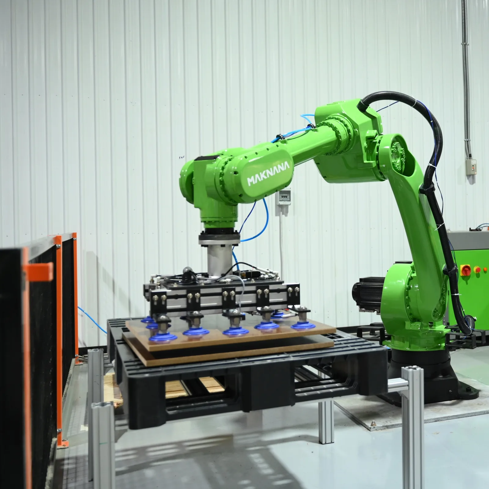
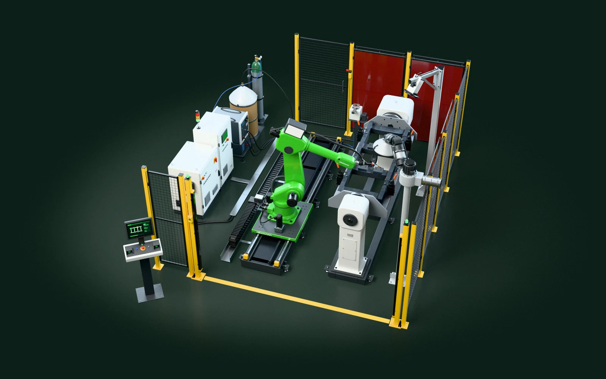
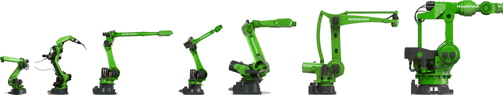
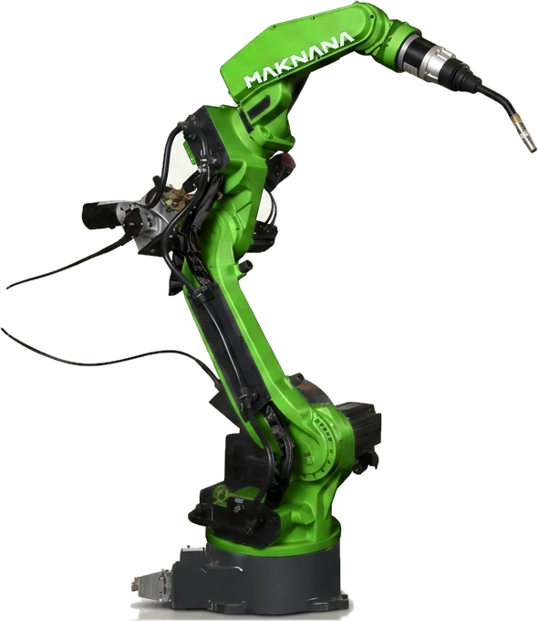
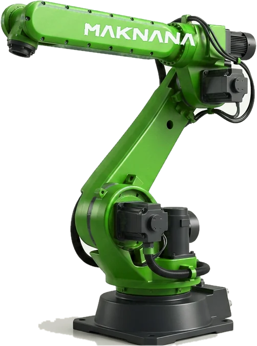
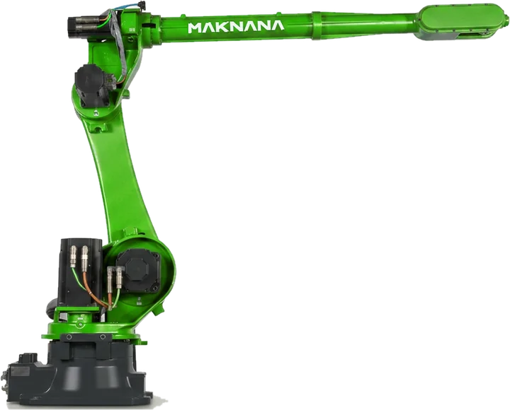
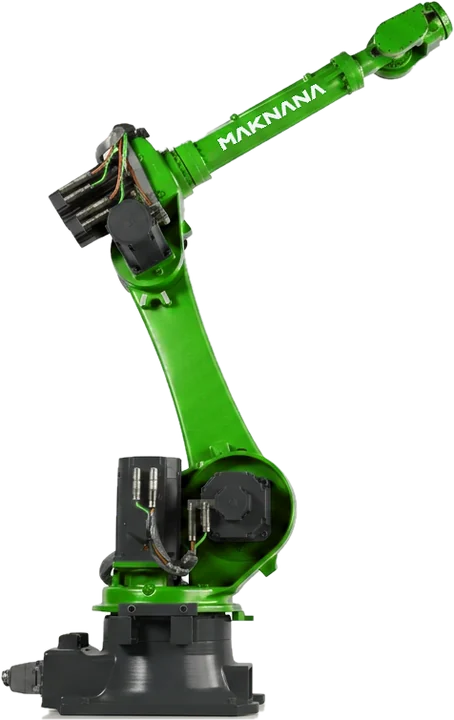
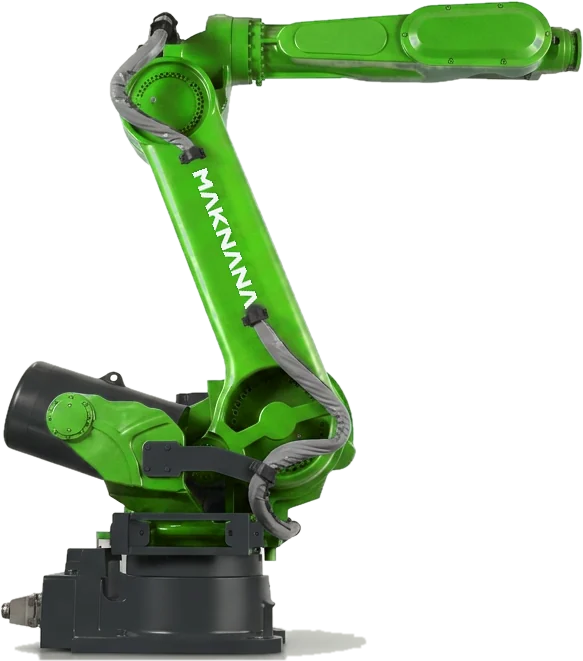
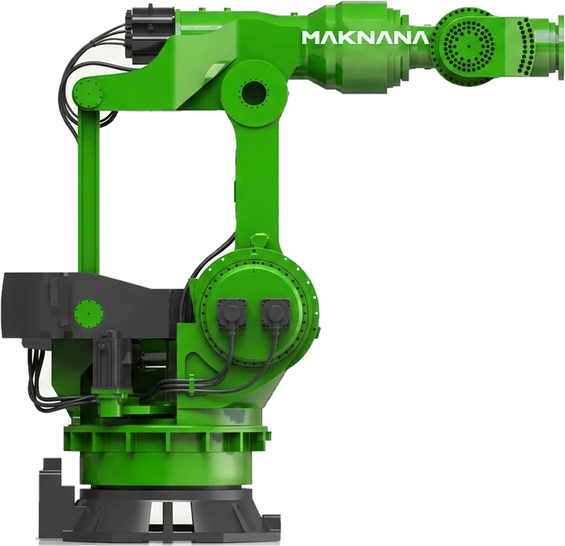
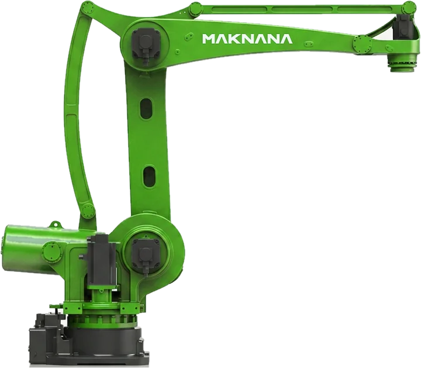

تصميم خلية قياسي، لقطعة تشبه قطعتك.
- كيف تراها قبل الشراء
- تعمل خلية جاهزة على قطعتك في الرياض، إن توفّرت خلية تناسبها.
- ما الذي يتغيّر لك
- تُجهَّز لقطعتك أداة التثبيت والبرنامج فقط.
خلايا روبوتية للحام والقطع والثني والرص وتغذية الماكينات، تُصمَّم وتُدمَج وتُختبَر في الرياض. وإن توفّرت لدينا خلية جاهزة تناسب قطعتك، شاهدت الخلية تعمل عليها قبل الشراء.
إطلاق سلسلة MR في منتدى الصناعة السعودي بجدة، 14 سبتمبر 2026.شاهد فيلم الإطلاق
تأسست في الرياض
مهام تُبنى خلايانا لها، إضافةً إلى الخطوط المتكاملة
عقد للروبوت والتكامل والخدمة
خلايا وخطوط نفّذناها، وتطوير مصنع واحد أشرفنا عليهخط خزانات وخليتا لحام. إحدى النتيجتين من سجلات العميل، والأخرى من تحليلنا.

تحمل طرازات MR6-1400 وMR6-2080 وMR50-2185 علامة «صنع في السعودية»
اختر العمل الذي تريد إنجازه. يصلك كل حل خليةً متكاملة، تشمل المعدات الملحقة بالروبوت.
انتظار اللحّامين المهرة، والتفاوت بين الورديات.
رسم خطوط القطع يدويًا على الألواح والمقاطع، وإعادة قطعها.
المناولة اليدوية الثقيلة عند مكبس الثني.

الرفع المتكرّر في نهاية الخط.

توقّف الماكينة ريثما يحمّل المشغّل القطعة التالية.
تكدّس القطع بين المحطات.

نموذج توضيحي ثلاثي الأبعاد لحل لحام. تُصمَّم خليتك وفق قطعتك.
روبوت من سلسلة MR، بمدى وصول وحمولة يناسبان قطعتك.
مشعل أو قابض أو مغزل، مع تجهيزاته. الأداة هي التي تنجز العمل، ولذلك نختارها قبل الذراع.
تمسك أداة التثبيت قطعتك، ويديرها المُوضِّع ليصل الروبوت إلى كل وصلة في وضع مناسب.
وسيلة تحمل الروبوت على امتداد القطع الأطول من مدى وصوله.
عند تفاوت القطع، تحدّد الكاميرا موضع القطعة وخطوط لحامها.
أسوار وستائر ضوئية وأقفال أمان تحمي العاملين حول الخلية.
نظام PLC للخلية وشاشة مشغّل واحدة ينسّقان وحدة تحكّم الروبوت وكل جهاز.
ندرّب مشغّليك ونتولّى خدمة الخلية هنا في المملكة.
تسع عائلات في سلسلة MR. ثلاثة طرازات تُجمَّع في الرياض، والبقية تُورَّد حسب الطلب، وتُؤكَّد قيمها في كل عرض سعر.


اللحام6–10 كجم02
الحجم المدمج7–8 كجم03
المناولة الخفيفة6–10 كجم04
الحمولة المتوسطة20–125 كجم05
الحمولة العالية210–310 كجم06
الأحمال الثقيلة500–6,000 كجم07
تغذية المكابس15–40 كجم08الرص50–300 كجم09الرص الثقيل500–6,000 كجمالروبوتات المعروضة: تصوير للمنتجات بألوان مكننة، وليست صورًا فوتوغرافية.
كلما كانت قطعتك أقرب إلى خلية قياسية، شاهدت الخلية تعمل عليها في وقت أقرب.
تصميم خلية قياسي، لقطعة تشبه قطعتك.
خلية قياسية يُغيَّر فيها جهاز واحد أو يُضاف: القابض أو المشعل أو سكة أطول.
خلية تُصمَّم خصيصًا لقطعتك، بدءًا من مخطط الخلية.
لكل عرض سعره ومدة توريده.
من سجلات العملاء وتحليل التشغيل لدينا؛ ويذكر كل رقم مصدره.
 إحدى دراسات الحالة لدينا · خزانات المحوّلات
إحدى دراسات الحالة لدينا · خزانات المحوّلات
في عدد الخزانات شهريًا، للخط كاملًا. خط متكامل: من 100 إلى 140 خزانًا شهريًا. وطاقم اللحام من 8 لحّامين إلى 3 مشغّلين في الوردية.
اطّلع على المشروعفي زمن الدورة لكل قاعدة مضخة. خلية لحام واحدة مع مُوضِّع دوّار: من 15 إلى 8 دقائق للقاعدة. (تحليلنا).
اطّلع على المشروعالمصادر: خط الخزانات: سجلات إنتاج العميل (2025)؛ خلية قواعد المضخات: تحليل التشغيل من مكننة (أغسطس 2025). الصور: تعرض بطاقة قواعد المضخات قاعدةً على مُوضِّع (رسم تخطيطي)؛ لحام ألواح الزعانف على خط خزانات المحوّلات. نُفّذت هذه الخلايا في 2024–2025 بروبوتات شركائنا، قبل إطلاق سلسلة MR في سبتمبر 2026. وتُبنى الخلايا الجديدة بروبوتات سلسلة MR.
اسحب المقبض عبر الفيلم: في جانب اللحام اليدوي، وفي الآخر اللحام الآلي. وكلاهما مصوَّر على خط خزانات محوّلات نفّذناه.
| المقياس | يدويًا | آليًا |
|---|---|---|
| نسبة زمن القوس من وقت العملبيانات لحام عامة: نسب التشغيل النموذجية لدى معهد TWI، لحام MIG/MAG. ليست حالة لمكننة. | نحو 45% | نحو 90% |
| طاقم اللحام في الورديةخط خزانات المحوّلات، الخط كاملًا، سجلات إنتاج العميل (2025) | 8 لحّامين | 3 مشغّلين |
يذكر معهد TWI أن نسبة تشغيل القوس النموذجية تبلغ نحو 45% في لحام MIG/MAG شبه الآلي (المحمول باليد)، ونحو 90% في اللحام الآلي. أي قرابة ضعف زمن القوس. ويُحدَّد الرقم الخاص بقطعتك بالتجربة. المصادر: معهد TWI، نسب التشغيل النموذجية في اللحام بالقوس (اطُّلع عليه في 22 أكتوبر 2026). خط الخزانات: سجلات إنتاج العميل (2025). نُفّذت هذه الخلايا في 2024–2025 بروبوتات شركائنا، قبل إطلاق سلسلة MR في سبتمبر 2026. وتُبنى الخلايا الجديدة بروبوتات سلسلة MR.
صورًا أو رسمًا للقطعة، وعدد ما تصنعه منها سنويًا.
نتحقّق من توفّر خلية في منشأتنا بالرياض تناسب قطعتك.
إن توفّرت خلية مناسبة، تعمل على قطعتك أمامك. وإلا فنبدأ بمخطط ومحاكاة.